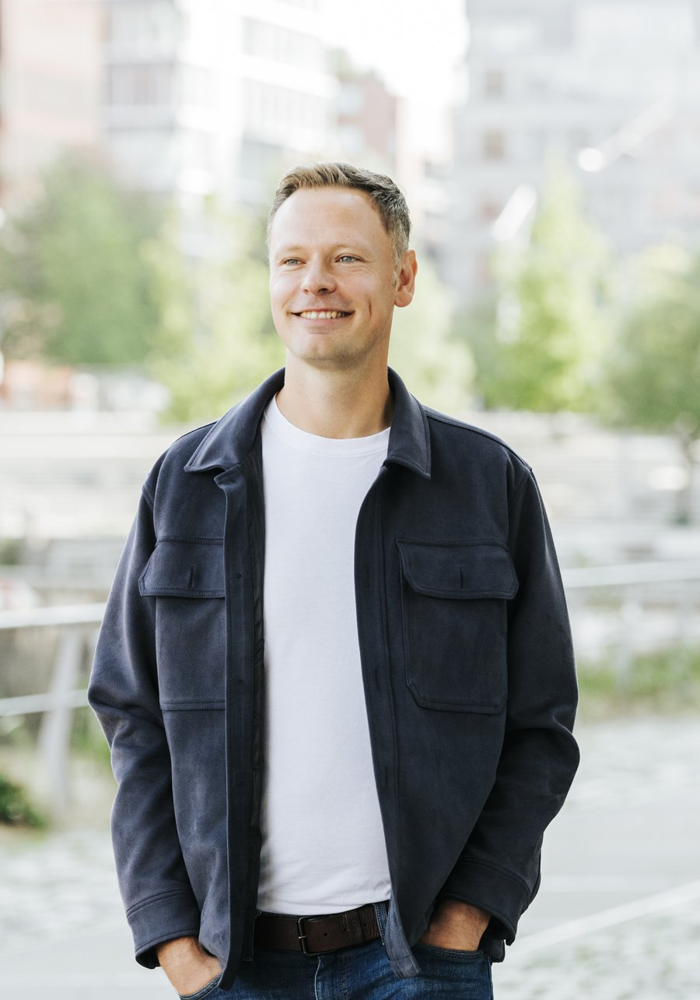

Getting the right support is vital, even at the top. I've walked in those shoes for years — now I want to pass on my experience to see you succeed.
Learn More
From startup to international scaleup. For over a decade I have held top management and board positions across industries and cultures, in both the corporate and start-up world — including CEO of Deutsche Bahn's most strategic Western European region, and President of Trainline International through its transformation into a European unicorn.
Trust is the basis everything else is built on — confidentiality, reliability, and honest, bold feedback given with care. I see people as complex human beings, not just job titles, which is why coaching has to be tailor-made.
Appointed CEO early in my career, I gathered over a decade of top management experience — and just as much experience being coached myself, as well as coaching, mentoring and advising others.
Being the youngest in the room means thinking outside the box and sometimes shaking things up. Turning a vision into reality takes courage, strength of mind, and a willingness to stray off the beaten track.
The reality — especially in fast-moving businesses — is often a combination of all three. You decide what you need, in what combination, and at what pace.
Input from my own experience and areas of expertise — on a specific topic, a project, or a longer-term seat on the board as a non-executive director.
Who? Middle/senior management or C-level in a scaling start-up, looking to develop your skills.
How long? Around half a year, roughly six two-hour sessions plus calls and homework in between.
Goal? Defined together from the outset — transformational, and visible to the people you work with.
Next step? A first meeting to get to know each other. If it's a fit, we start right away.
Passing on what I've learned at universities, start-up hubs and events — lectures, keynotes, fireside talks.
A few words from people I've worked with.
"Daniel's strategic advice has helped us advance our technical developments to boost cross-border giving in Europe. He is a reliable and trustworthy advisor, with strong listening and analytical skills."
"I have been working for 28 years in 8 companies and honestly, I have never worked with someone like Daniel before: open, intelligent, very experienced, super connected, accessible, funny and with a vision."
"Over the last 7 years Daniel has been an incredible support in my professional decisions. Always positive and down-to-earth, he helped me formulate my objectives and focus on them."
"Daniel n'est pas là pour vous souffler la réponse, mais pour vous aider à y arriver par vous-même, à prendre confiance en vous, à vous faire vous poser les bonnes questions."
"Daniel has a rare mix of empathy, sensibility, business acumen, and ability to assess situations with the right distance, that makes his support as a coach priceless."